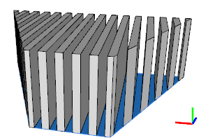
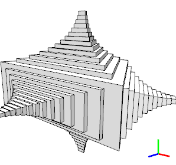

NIL operation
NIL
The NIL operation deletes the current shape from the shape tree. It can be used e.g. to create holes in split operations or to terminate recursive rules.
Related
Examples
Using NIL to create Holes

Lot-->
extrude(10)
split(x){ { ~1 : X | ~1 : NIL }* | ~1 : X } }
Using NIL to stop a Recursion

attr ErkerFact = 0.8
attr ErkerDepth = 0.8
attr ErkerStop = 2
Lot-->
extrude(10)
X
comp(f) { all : Erker }
Erker-->
case(scope.sx > ErkerStop) :
s('ErkerFact, 'ErkerFact, 0)
center(xy)
alignScopeToGeometry(yUp, 0)
extrude(ErkerDepth)
X
comp(f){top : Erker}
else:
NIL